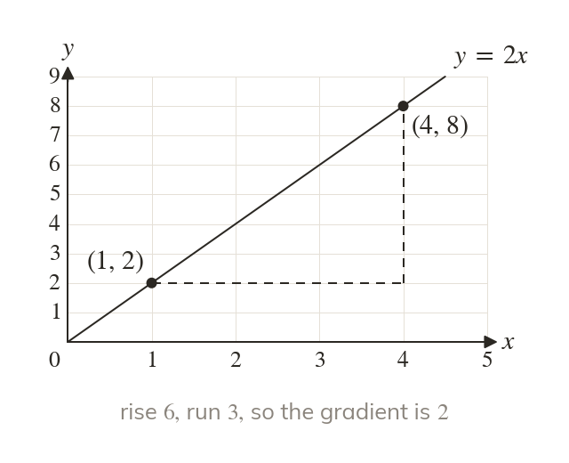
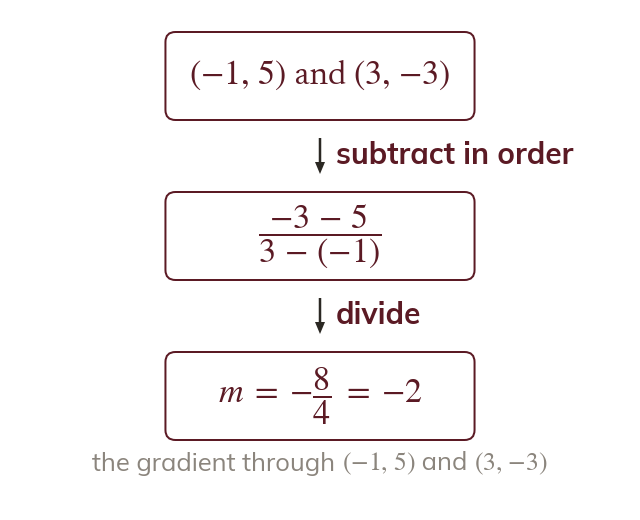
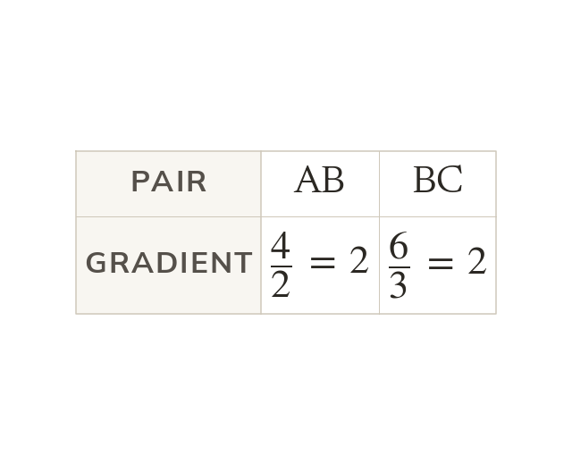
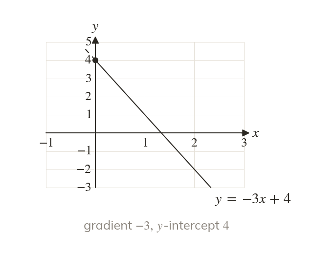
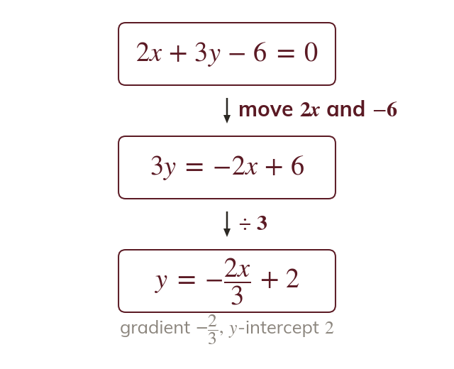
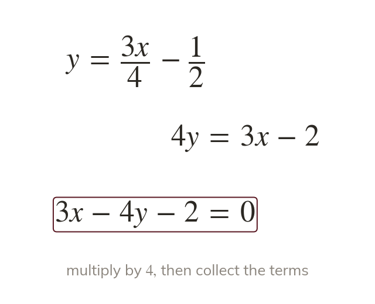

Rise over run
The gradient of a line is the change in y divided by the change in x. From to y rises while x runs so the gradient is
A straight line is fixed by its gradient and one point, and shows both at a glance. Moving between and ax + by + comes up in every coordinate geometry question, and next lesson finds the equation of a line from a point and a gradient.
Work down the page at your own pace. Write every answer in your book first, then click to check it.
Read each card, then follow the worked examples one step at a time.

The gradient of a line is the change in y divided by the change in x. From to y rises while x runs so the gradient is

For and the gradient is Subtract in the same order on the top and the bottom; a negative gradient means the line falls from left to right.

Three points lie on one straight line when the gradient between each pair is the same. For and and both have gradient and is on both, so and are collinear.
Pick an answer. If it's wrong, the feedback tells you which mistake it was.
Write the blanks in your book first, then tap each one to check.
Read each card, then follow the worked examples one step at a time.

In the number multiplying is the gradient, and is where the line meets the y-axis. The line has gradient and meets the y-axis at

To read the gradient of ax + by + rearrange it into the form For , so and the gradient is not

To write as ax + by + clear any fraction first, then collect every term on one side. becomes so
Pick an answer. If it's wrong, the feedback tells you which mistake it was.
Write the blanks in your book first, then tap each one to check.
Finished? Next lesson: 5.2 Equations of Straight Lines.
For each skill, tap the one that is true for you today. Your Revise pages start with anything you mark Not yet.
Your ratings are saved on this device only.
Log in, then search for a code to practise that skill.